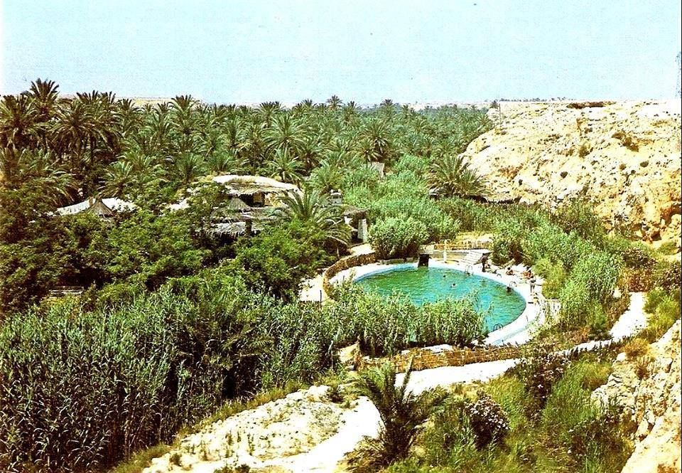
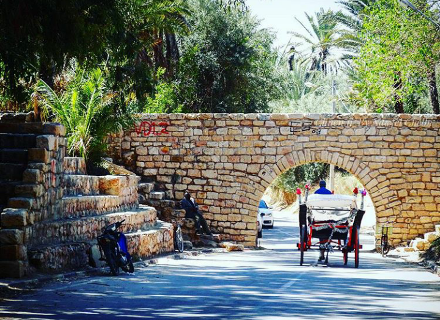
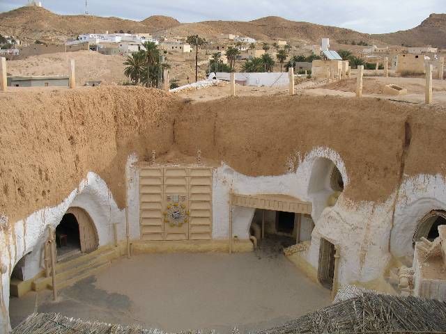

Gabès — L’oasis entre mer et désert 🌴
Gabès est une ville située dans le sud-est de la Tunisie, connue pour son caractère unique de ville-oasis maritime. Elle se distingue par ses magnifiques palmeraies, ses jardins verdoyants et sa proximité avec la mer Méditerranée.
La ville possède également un riche patrimoine culturel et historique, notamment Souk Jara , célèbre pour son artisanat et son henné, ainsi que mosquée de jara .
Aux alentours de Gabès, on peut découvrir des paysages désertiques exceptionnels et des villages traditionnels comme Matmata, connu pour ses habitations troglodytiques.
Gabès représente ainsi un mélange remarquable de nature, histoire, culture et traditions, faisant d’elle une destination incontournable du sud tunisien.

Les fameux Destinations
Souk Jara
Le Souk Jara est l’un des lieux les plus célèbres et emblématiques de Gabès. Situé au cœur de la ville, il est particulièrement connu pour la vente du henné, qui fait partie des produits traditionnels les plus importants de la région.
On y trouve également de nombreux produits artisanaux, des épices, parfums, tissus, paniers et objets traditionnels tunisiens.
Le souk offre une ambiance authentique qui permet aux visiteurs de découvrir les traditions et le savoir-faire local.


Chenini – Gabès
Chenini est une localité située dans la région de Gabès, connue pour ses palmeraies, ses paysages naturels et son patrimoine traditionnel.
Elle fait partie des endroits intéressants à découvrir autour de Gabès.
Chenini est notamment connue pour son oasis verdoyante, où les palmiers, les arbres fruitiers et les jardins créent un contraste magnifique avec le paysage désertique du sud tunisien.
C’est également un lieu qui permet de découvrir le mode de vie traditionnel des habitants de la région et la richesse naturelle de l’oasis.


Matmata
Matmata est une ville célèbre du sud de la Tunisie, située dans le gouvernorat de Gabès.
Elle est particulièrement connue pour ses habitations troglodytiques, des maisons traditionnelles creusées directement dans le sol.
Ces maisons sont construites autour d’une grande cour centrale, avec des pièces creusées tout autour.
Cette architecture permet de se protéger de la chaleur en été et du froid en hiver.
Matmata est également célèbre pour ses paysages désertiques et son patrimoine berbère.
Le village a même servi de décor à certaines scènes de la saga Star Wars.
